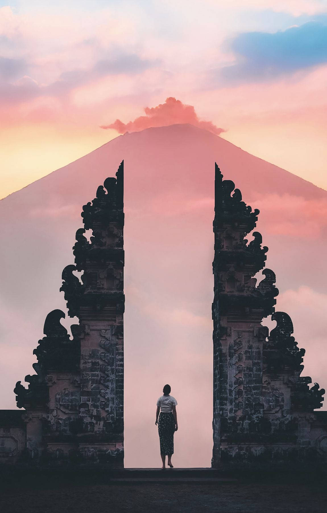

Bali
Bali is an island in Indonesia renowned for its stunning natural beauty, beautiful beaches, rich culture, and friendly locals. With its vibrant arts scene, delicious cuisine, and countless opportunities for adventure, Bali offers a perfect escape. Come and enjoy the charm of Bali's nature and its cultural delights!

Yogyakarta
Yogyakarta, or Jogja, is a city in Indonesia known for its rich cultural heritage, historical landmarks, and vibrant arts scene. It's home to the magnificent Borobudur and Prambanan temples, traditional Javanese arts, and delicious local cuisine. Come and explore the heart of Javanese culture and history in Jogja!